Links:
ill also use this for links i wanna share or like websites i visit frequently, something like that
tldr, you guys get to see links, be happy i have some idea of what im doing lol
 Cool Sites
Cool Sites
there are a couple of cool sites ive stumbled across and theyre going to be under the "cool sites" tab
what am i braindead
oh also the links are buttons/images so u can just click them
just know that im not responsible for anything that happens on those other site okbyeee


 Personal
pages!
Personal
pages! here ill put buttons to a lot of sites i find cool while web surfing, a lot might be from because neocities makes it
really nice and easy to set up a little part of the internet for you, you should definetly check it out if you dont want
to suffer and find a web hosting service like i did, at least i found a decent free one lol
in the future ill buy one, just so i can change this domain name
REGARDLESS
here you go :3
vvv
buttons
go here vvv
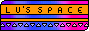

 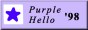
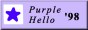

 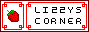
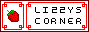

 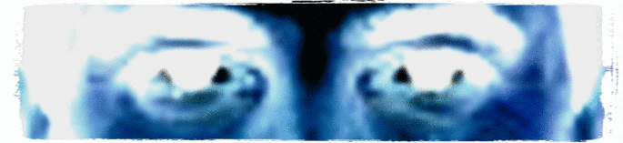
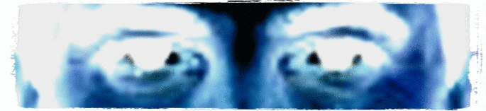
[] [] [] [] []
Learn anything!
with the appropriately named learn-anything.xyz , you can
tell it is a website that i found is really cool
you can input any real thing and learn how to do it, it gives you
relevant resources and helping links to help teach yourself anything you want, i learned a bit of
css and html there, so it is helpful! definetley check in out some time
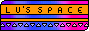
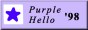 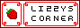 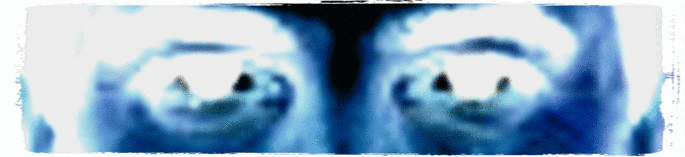[] [] [] [] []
Learn anything!
with the appropriately named learn-anything.xyz , you can
tell it is a website that i found is really cool
you can input any real thing and learn how to do it, it gives you
relevant resources and helping links to help teach yourself anything you want, i learned a bit of
css and html there, so it is helpful! definetley check in out some time